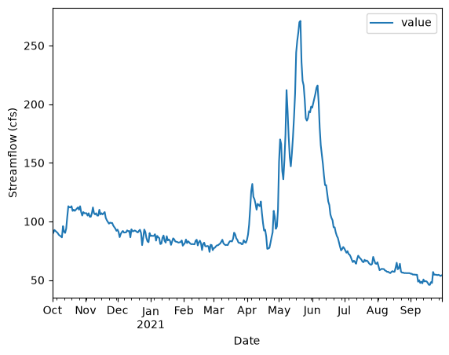

USGS dataretrieval Python Package get_daily() Examples
This notebook provides examples of using the Python dataretrieval package to retrieve daily streamflow data for a United States Geological Survey (USGS) monitoring location. The dataretrieval package provides a collection of functions to get data from the USGS Water Data API and other online sources of hydrology and water quality data.
Install the Package
Use the following code to install the package if it doesn’t exist already within your Jupyter Python environment.
[1]:
!pip install dataretrieval
Requirement already satisfied: dataretrieval in /opt/hostedtoolcache/Python/3.13.14/x64/lib/python3.13/site-packages (0.1.dev1+gc5c0f9f71)
Requirement already satisfied: httpx in /opt/hostedtoolcache/Python/3.13.14/x64/lib/python3.13/site-packages (from dataretrieval) (0.28.1)
Requirement already satisfied: pandas<4.0.0,>=2.0.0 in /opt/hostedtoolcache/Python/3.13.14/x64/lib/python3.13/site-packages (from dataretrieval) (3.0.3)
Requirement already satisfied: anyio>=4.0 in /opt/hostedtoolcache/Python/3.13.14/x64/lib/python3.13/site-packages (from dataretrieval) (4.14.1)
Requirement already satisfied: numpy>=1.26.0 in /opt/hostedtoolcache/Python/3.13.14/x64/lib/python3.13/site-packages (from pandas<4.0.0,>=2.0.0->dataretrieval) (2.5.0)
Requirement already satisfied: python-dateutil>=2.8.2 in /opt/hostedtoolcache/Python/3.13.14/x64/lib/python3.13/site-packages (from pandas<4.0.0,>=2.0.0->dataretrieval) (2.9.0.post0)
Requirement already satisfied: idna>=2.8 in /opt/hostedtoolcache/Python/3.13.14/x64/lib/python3.13/site-packages (from anyio>=4.0->dataretrieval) (3.18)
Requirement already satisfied: six>=1.5 in /opt/hostedtoolcache/Python/3.13.14/x64/lib/python3.13/site-packages (from python-dateutil>=2.8.2->pandas<4.0.0,>=2.0.0->dataretrieval) (1.17.0)
Requirement already satisfied: certifi in /opt/hostedtoolcache/Python/3.13.14/x64/lib/python3.13/site-packages (from httpx->dataretrieval) (2026.6.17)
Requirement already satisfied: httpcore==1.* in /opt/hostedtoolcache/Python/3.13.14/x64/lib/python3.13/site-packages (from httpx->dataretrieval) (1.0.9)
Requirement already satisfied: h11>=0.16 in /opt/hostedtoolcache/Python/3.13.14/x64/lib/python3.13/site-packages (from httpcore==1.*->httpx->dataretrieval) (0.16.0)
Load the package so you can use it along with other packages used in this notebook.
[2]:
from IPython.display import display
import dataretrieval.waterdata as waterdata
Basic Usage
The dataretrieval package has several functions that allow you to retrieve data from different web services. This example uses the get_daily() function to retrieve daily streamflow data for a USGS monitoring location from the USGS Water Data API. The following arguments are supported:
Arguments (Additional arguments, if supplied, will be used as query parameters)
monitoring_location_id (string or iterable of strings): A unique identifier representing a single monitoring location, formed by combining the agency code with the site number (e.g.
USGS-10109000). Accepts a single ID or a list of IDs.parameter_code (string or iterable of strings): One or more 5-digit USGS parameter codes identifying the constituent measured and its units of measure (e.g.
00060for discharge).statistic_id (string or iterable of strings): One or more codes corresponding to the statistic an observation represents (e.g.
00001for maximum,00003for mean).time (string): The date or interval an observation represents, following RFC 3339. May be a single date, a bounded or half-bounded interval (e.g.
2020-10-01/2021-09-30), or an ISO 8601 duration (e.g.P7Dfor the past seven days).skip_geometry (boolean): If
True, response geometries are omitted and the returned data frame contains no spatial information.
Example 1: Get daily value data for a specific parameter at a single USGS monitoring location between a begin and end date.
[3]:
# Set the parameters needed to retrieve data
siteNumber = "USGS-10109000" # LOGAN RIVER ABOVE STATE DAM, NEAR LOGAN, UT
parameterCode = "00060" # Discharge
startDate = "2020-10-01"
endDate = "2021-09-30"
# Retrieve the data
dailyStreamflow = waterdata.get_daily(
monitoring_location_id=siteNumber, parameter_code=parameterCode, time=f"{startDate}/{endDate}"
)
print("Retrieved " + str(len(dailyStreamflow[0])) + " data values.")
Retrieving: daily · 1 page · 365 rows
No API key detected — register for higher rate limits at https://api.waterdata.usgs.gov/signup/
Retrieved 365 data values.
Interpreting the Result
The get_daily() function returns a tuple containing a pandas data frame and an associated metadata object. The data frame contains the daily values for the observed variable and time period requested. It is a flat table with a default integer index; the dates associated with each observation are held in a time column rather than in the index.
Once you’ve got the data frame, there are several useful things you can do to explore the data.
[4]:
# Display the data frame as a table
display(dailyStreamflow[0])
| geometry | time_series_id | monitoring_location_id | parameter_code | statistic_id | time | value | unit_of_measure | approval_status | qualifier | last_modified | daily_id | |
|---|---|---|---|---|---|---|---|---|---|---|---|---|
| 0 | POINT (-111.78398 41.74355) | ecae32c6bdbe495abe71288c65b9a1af | USGS-10109000 | 00060 | 00003 | 2020-10-01 | 88.8 | ft^3/s | Approved | None | 2025-03-11 21:52:02.820548+00:00 | 24014492-4f8f-48f1-84aa-fe178eb07209 |
| 1 | POINT (-111.78398 41.74355) | ecae32c6bdbe495abe71288c65b9a1af | USGS-10109000 | 00060 | 00003 | 2020-10-02 | 90.5 | ft^3/s | Approved | None | 2025-03-11 21:52:02.820548+00:00 | 15e8e430-20ce-4802-ae17-850c593be98c |
| 2 | POINT (-111.78398 41.74355) | ecae32c6bdbe495abe71288c65b9a1af | USGS-10109000 | 00060 | 00003 | 2020-10-03 | 92.7 | ft^3/s | Approved | None | 2025-03-11 21:52:02.820548+00:00 | 73769928-ce1b-4112-a41c-b0d1b1880e34 |
| 3 | POINT (-111.78398 41.74355) | ecae32c6bdbe495abe71288c65b9a1af | USGS-10109000 | 00060 | 00003 | 2020-10-04 | 91.8 | ft^3/s | Approved | None | 2025-03-11 21:52:02.820548+00:00 | c87a8c53-d9d4-4701-9f13-60b0090cca58 |
| 4 | POINT (-111.78398 41.74355) | ecae32c6bdbe495abe71288c65b9a1af | USGS-10109000 | 00060 | 00003 | 2020-10-05 | 91.0 | ft^3/s | Approved | None | 2025-03-11 21:52:02.820548+00:00 | b85a8631-ede6-48a7-a17d-ec0cfd8d7ee0 |
| ... | ... | ... | ... | ... | ... | ... | ... | ... | ... | ... | ... | ... |
| 360 | POINT (-111.78398 41.74355) | ecae32c6bdbe495abe71288c65b9a1af | USGS-10109000 | 00060 | 00003 | 2021-09-26 | 54.2 | ft^3/s | Approved | None | 2025-03-11 21:52:02.820548+00:00 | 7f79ca42-11b6-4c34-b13c-23b3d79f4c7a |
| 361 | POINT (-111.78398 41.74355) | ecae32c6bdbe495abe71288c65b9a1af | USGS-10109000 | 00060 | 00003 | 2021-09-27 | 54.5 | ft^3/s | Approved | None | 2025-03-11 21:52:02.820548+00:00 | d2ede051-6a50-4e98-b9e8-5fd77cd45ba5 |
| 362 | POINT (-111.78398 41.74355) | ecae32c6bdbe495abe71288c65b9a1af | USGS-10109000 | 00060 | 00003 | 2021-09-28 | 54.1 | ft^3/s | Approved | None | 2025-03-11 21:52:02.820548+00:00 | fb754ea7-372e-432a-90b6-1cf6ecf990ef |
| 363 | POINT (-111.78398 41.74355) | ecae32c6bdbe495abe71288c65b9a1af | USGS-10109000 | 00060 | 00003 | 2021-09-29 | 53.5 | ft^3/s | Approved | None | 2025-03-11 21:52:02.820548+00:00 | 1085b93f-da01-4857-9d93-bbd90871c4d2 |
| 364 | POINT (-111.78398 41.74355) | ecae32c6bdbe495abe71288c65b9a1af | USGS-10109000 | 00060 | 00003 | 2021-09-30 | 54.0 | ft^3/s | Approved | None | 2025-03-11 21:52:02.820548+00:00 | 02de87ce-13bf-4b8a-8666-8a6b24281352 |
365 rows × 12 columns
Show the data types of the columns in the resulting data frame.
[5]:
print(dailyStreamflow[0].dtypes)
geometry geometry
time_series_id str
monitoring_location_id str
parameter_code str
statistic_id str
time datetime64[us]
value float64
unit_of_measure str
approval_status str
qualifier object
last_modified datetime64[us, UTC]
daily_id str
dtype: object
Get summary statistics for the daily streamflow values.
[6]:
dailyStreamflow[0].describe()
[6]:
| time | value | |
|---|---|---|
| count | 365 | 365.000000 |
| mean | 2021-04-01 00:00:00 | 95.795616 |
| min | 2020-10-01 00:00:00 | 45.900000 |
| 25% | 2020-12-31 00:00:00 | 75.200000 |
| 50% | 2021-04-01 00:00:00 | 85.800000 |
| 75% | 2021-07-01 00:00:00 | 106.000000 |
| max | 2021-09-30 00:00:00 | 271.000000 |
| std | NaN | 41.146872 |
Make a quick time series plot.
[7]:
ax = dailyStreamflow[0][["time", "value"]].plot(x="time", y="value")
ax.set_xlabel("Date")
ax.set_ylabel("Streamflow (cfs)")
[7]:
Text(0, 0.5, 'Streamflow (cfs)')

The other part of the result returned from the get_daily() function is a metadata object that contains information about the query that was executed to return the data. For example, you can access the URL that was assembled to retrieve the requested data from the USGS Water Data API.
[8]:
print(
"The query URL used to retrieve the data from the Water Data API was: " + dailyStreamflow[1].url
)
The query URL used to retrieve the data from the Water Data API was: https://api.waterdata.usgs.gov/ogcapi/v0/collections/daily/items?monitoring_location_id=USGS-10109000¶meter_code=00060&time=2020-10-01%2F2021-09-30&limit=50000
Additional Examples
Example 2: Get daily mean and max discharge and temperature values for a monitoring location between a begin and end date.
Parameter Code: 00010 = temperature, 00060 = discharge See https://help.waterdata.usgs.gov/codes-and-parameters/parameters
Statistic Code: 00001 = Maximum, 00003 = Mean See https://help.waterdata.usgs.gov/stat_code
NOTE: Temperature and discharge are not fully available for both statistics at this monitoring location.
[9]:
siteID = "USGS-04085427"
dailyQAndT = waterdata.get_daily(
monitoring_location_id=siteID,
parameter_code=["00010", "00060"],
time=f"{startDate}/{endDate}",
statistic_id=["00001", "00003"],
)
display(dailyQAndT[0])
Retrieving: daily · 1 page · 883 rows
| geometry | time_series_id | monitoring_location_id | parameter_code | statistic_id | time | value | unit_of_measure | approval_status | qualifier | last_modified | daily_id | |
|---|---|---|---|---|---|---|---|---|---|---|---|---|
| 0 | POINT (-87.71603 44.10617) | 66a73e8ca5654ff39e85a0afd29270e9 | USGS-04085427 | 00060 | 00003 | 2020-10-01 | 96.2 | ft^3/s | Approved | None | 2025-02-28 23:22:14.727748+00:00 | 8c56a6f4-d1f0-4c80-b909-fabb14f7845d |
| 1 | POINT (-87.71603 44.10617) | 66a73e8ca5654ff39e85a0afd29270e9 | USGS-04085427 | 00060 | 00003 | 2020-10-02 | 90.4 | ft^3/s | Approved | None | 2025-02-28 23:22:14.727748+00:00 | 6aa9a4f3-470f-41ed-b190-39605fac58a1 |
| 2 | POINT (-87.71603 44.10617) | 66a73e8ca5654ff39e85a0afd29270e9 | USGS-04085427 | 00060 | 00003 | 2020-10-03 | 84.7 | ft^3/s | Approved | None | 2025-02-28 23:22:14.727748+00:00 | 490c09f1-84cc-46ff-9a98-eed11438dcdc |
| 3 | POINT (-87.71603 44.10617) | 66a73e8ca5654ff39e85a0afd29270e9 | USGS-04085427 | 00060 | 00003 | 2020-10-04 | 84.9 | ft^3/s | Approved | None | 2025-02-28 23:22:14.727748+00:00 | 5f0f2fd6-ae2e-4274-beb6-9e66cfa48638 |
| 4 | POINT (-87.71603 44.10617) | 66a73e8ca5654ff39e85a0afd29270e9 | USGS-04085427 | 00060 | 00003 | 2020-10-05 | 93.4 | ft^3/s | Approved | None | 2025-02-28 23:22:14.727748+00:00 | 840a86c7-fc3f-4cda-81b9-d71199592c33 |
| ... | ... | ... | ... | ... | ... | ... | ... | ... | ... | ... | ... | ... |
| 878 | POINT (-87.71603 44.10617) | 40fb58737a834016aa829aaf5b7852d7 | USGS-04085427 | 00010 | 00003 | 2021-09-29 | 16.2 | degC | Approved | None | 2025-07-04 09:09:05.251279+00:00 | 4edbb797-0d48-4bff-9dc1-c87b591be4f0 |
| 879 | POINT (-87.71603 44.10617) | 66a73e8ca5654ff39e85a0afd29270e9 | USGS-04085427 | 00060 | 00003 | 2021-09-29 | 96.2 | ft^3/s | Approved | None | 2025-02-28 23:22:14.727748+00:00 | 902096d4-0c94-43c2-8915-90b37fcd500e |
| 880 | POINT (-87.71603 44.10617) | 40fb58737a834016aa829aaf5b7852d7 | USGS-04085427 | 00010 | 00003 | 2021-09-30 | 16.9 | degC | Approved | None | 2025-07-04 09:09:05.251279+00:00 | 63685ba1-1a37-4bcb-aa8d-b12029790942 |
| 881 | POINT (-87.71603 44.10617) | 66a73e8ca5654ff39e85a0afd29270e9 | USGS-04085427 | 00060 | 00003 | 2021-09-30 | 92.9 | ft^3/s | Approved | None | 2025-02-28 23:22:14.727748+00:00 | b4c6d77c-30e6-4aaf-9471-f0f7d08474d4 |
| 882 | POINT (-87.71603 44.10617) | ecb3d6ce4ff24ec78c53004409866f12 | USGS-04085427 | 00010 | 00001 | 2021-09-30 | 19.0 | degC | Approved | None | 2025-07-04 08:49:02.189016+00:00 | b9f5187d-0058-40de-a520-406348f494a9 |
883 rows × 12 columns
Example 3: Get daily mean and max discharge and temperature values for multiple monitoring locations between a begin and end date.
[10]:
dailyMultiSites = waterdata.get_daily(
monitoring_location_id=["USGS-01491000", "USGS-01645000"],
parameter_code=["00010", "00060"],
time="2012-01-01/2012-06-30",
statistic_id=["00001", "00003"],
)
display(dailyMultiSites[0])
Retrieving: daily · 1 page · 622 rows
| geometry | time_series_id | monitoring_location_id | parameter_code | statistic_id | time | value | unit_of_measure | approval_status | qualifier | last_modified | daily_id | |
|---|---|---|---|---|---|---|---|---|---|---|---|---|
| 0 | POINT (-75.78581 38.99719) | e3e3e89988454bf9b4249a5ec668ebc3 | USGS-01491000 | 00010 | 00003 | 2012-01-01 | 7.70 | degC | Approved | None | 2025-07-03 21:02:30.201507+00:00 | 58b9fbe7-a257-4603-956a-ccb0e06f1bdb |
| 1 | POINT (-75.78581 38.99719) | dd824d8c6ab448af88a9b197048775cc | USGS-01491000 | 00010 | 00001 | 2012-01-01 | 8.40 | degC | Approved | None | 2025-07-03 20:40:41.305038+00:00 | 5c897d0c-4de9-4928-b807-1bc16905d853 |
| 2 | POINT (-75.78581 38.99719) | 847d8581ff6c45f58ff7cb90dec31fab | USGS-01491000 | 00060 | 00003 | 2012-01-01 | 205.00 | ft^3/s | Approved | None | 2025-03-11 06:37:52.963967+00:00 | fda9e856-6cb8-432a-a520-9f682b362bc3 |
| 3 | POINT (-77.33578 39.12808) | 890f87c5498e4114b24dc0a53b1adcd8 | USGS-01645000 | 00060 | 00003 | 2012-01-01 | 175.00 | ft^3/s | Approved | None | 2025-03-10 14:07:21.598533+00:00 | ad61ba49-09b5-4156-a6d1-70ff7e4e123b |
| 4 | POINT (-75.78581 38.99719) | 847d8581ff6c45f58ff7cb90dec31fab | USGS-01491000 | 00060 | 00003 | 2012-01-02 | 193.00 | ft^3/s | Approved | None | 2025-03-11 06:37:52.963967+00:00 | 99038716-80c8-41c4-a899-bf8bb555d04e |
| ... | ... | ... | ... | ... | ... | ... | ... | ... | ... | ... | ... | ... |
| 617 | POINT (-77.33578 39.12808) | 890f87c5498e4114b24dc0a53b1adcd8 | USGS-01645000 | 00060 | 00003 | 2012-06-28 | 53.60 | ft^3/s | Approved | None | 2025-03-10 14:07:21.598533+00:00 | 2be731ab-1ab9-44e5-b204-4b8565f80a55 |
| 618 | POINT (-75.78581 38.99719) | 847d8581ff6c45f58ff7cb90dec31fab | USGS-01491000 | 00060 | 00003 | 2012-06-29 | 8.58 | ft^3/s | Approved | None | 2025-03-11 06:37:52.963967+00:00 | 7f5280e2-91b9-478f-8b97-d849ddbde0c0 |
| 619 | POINT (-77.33578 39.12808) | 890f87c5498e4114b24dc0a53b1adcd8 | USGS-01645000 | 00060 | 00003 | 2012-06-29 | 53.10 | ft^3/s | Approved | None | 2025-03-10 14:07:21.598533+00:00 | 0c84c8e9-753d-426c-a486-e63b41b895ac |
| 620 | POINT (-75.78581 38.99719) | 847d8581ff6c45f58ff7cb90dec31fab | USGS-01491000 | 00060 | 00003 | 2012-06-30 | 7.15 | ft^3/s | Approved | None | 2025-03-11 06:37:52.963967+00:00 | 0ba8a05a-e951-4179-9838-34fca388346c |
| 621 | POINT (-77.33578 39.12808) | 890f87c5498e4114b24dc0a53b1adcd8 | USGS-01645000 | 00060 | 00003 | 2012-06-30 | 129.00 | ft^3/s | Approved | None | 2025-03-10 14:07:21.598533+00:00 | d6745f0c-a373-495e-9228-ce3a6c2b71a1 |
622 rows × 12 columns
Like all of the waterdata getters, get_daily() returns a flat data frame with a default integer index regardless of how many monitoring locations are requested. Each row carries its own monitoring_location_id, parameter_code, statistic_id, and time, so multi-location results can be filtered or pivoted as needed.
[11]:
dailyMultiSites = waterdata.get_daily(
monitoring_location_id=["USGS-01491000", "USGS-01645000"],
parameter_code=["00010", "00060"],
time="2012-01-01/2012-06-30",
statistic_id=["00001", "00003"],
)
display(dailyMultiSites[0])
Retrieving: daily · 1 page · 622 rows
| geometry | time_series_id | monitoring_location_id | parameter_code | statistic_id | time | value | unit_of_measure | approval_status | qualifier | last_modified | daily_id | |
|---|---|---|---|---|---|---|---|---|---|---|---|---|
| 0 | POINT (-75.78581 38.99719) | e3e3e89988454bf9b4249a5ec668ebc3 | USGS-01491000 | 00010 | 00003 | 2012-01-01 | 7.70 | degC | Approved | None | 2025-07-03 21:02:30.201507+00:00 | 58b9fbe7-a257-4603-956a-ccb0e06f1bdb |
| 1 | POINT (-75.78581 38.99719) | dd824d8c6ab448af88a9b197048775cc | USGS-01491000 | 00010 | 00001 | 2012-01-01 | 8.40 | degC | Approved | None | 2025-07-03 20:40:41.305038+00:00 | 5c897d0c-4de9-4928-b807-1bc16905d853 |
| 2 | POINT (-75.78581 38.99719) | 847d8581ff6c45f58ff7cb90dec31fab | USGS-01491000 | 00060 | 00003 | 2012-01-01 | 205.00 | ft^3/s | Approved | None | 2025-03-11 06:37:52.963967+00:00 | fda9e856-6cb8-432a-a520-9f682b362bc3 |
| 3 | POINT (-77.33578 39.12808) | 890f87c5498e4114b24dc0a53b1adcd8 | USGS-01645000 | 00060 | 00003 | 2012-01-01 | 175.00 | ft^3/s | Approved | None | 2025-03-10 14:07:21.598533+00:00 | ad61ba49-09b5-4156-a6d1-70ff7e4e123b |
| 4 | POINT (-75.78581 38.99719) | 847d8581ff6c45f58ff7cb90dec31fab | USGS-01491000 | 00060 | 00003 | 2012-01-02 | 193.00 | ft^3/s | Approved | None | 2025-03-11 06:37:52.963967+00:00 | 99038716-80c8-41c4-a899-bf8bb555d04e |
| ... | ... | ... | ... | ... | ... | ... | ... | ... | ... | ... | ... | ... |
| 617 | POINT (-77.33578 39.12808) | 890f87c5498e4114b24dc0a53b1adcd8 | USGS-01645000 | 00060 | 00003 | 2012-06-28 | 53.60 | ft^3/s | Approved | None | 2025-03-10 14:07:21.598533+00:00 | 2be731ab-1ab9-44e5-b204-4b8565f80a55 |
| 618 | POINT (-75.78581 38.99719) | 847d8581ff6c45f58ff7cb90dec31fab | USGS-01491000 | 00060 | 00003 | 2012-06-29 | 8.58 | ft^3/s | Approved | None | 2025-03-11 06:37:52.963967+00:00 | 7f5280e2-91b9-478f-8b97-d849ddbde0c0 |
| 619 | POINT (-77.33578 39.12808) | 890f87c5498e4114b24dc0a53b1adcd8 | USGS-01645000 | 00060 | 00003 | 2012-06-29 | 53.10 | ft^3/s | Approved | None | 2025-03-10 14:07:21.598533+00:00 | 0c84c8e9-753d-426c-a486-e63b41b895ac |
| 620 | POINT (-75.78581 38.99719) | 847d8581ff6c45f58ff7cb90dec31fab | USGS-01491000 | 00060 | 00003 | 2012-06-30 | 7.15 | ft^3/s | Approved | None | 2025-03-11 06:37:52.963967+00:00 | 0ba8a05a-e951-4179-9838-34fca388346c |
| 621 | POINT (-77.33578 39.12808) | 890f87c5498e4114b24dc0a53b1adcd8 | USGS-01645000 | 00060 | 00003 | 2012-06-30 | 129.00 | ft^3/s | Approved | None | 2025-03-10 14:07:21.598533+00:00 | d6745f0c-a373-495e-9228-ce3a6c2b71a1 |
622 rows × 12 columns
Example 4: Query a monitoring location that has no matching data for the requested period; returns an empty data frame.
[12]:
siteID = "USGS-05212700"
notActive = waterdata.get_daily(
monitoring_location_id=siteID, parameter_code="00060", time="2014-01-01/2014-01-07"
)
display(notActive[0])
Retrieving: daily · 1 page
| geometry | time_series_id | monitoring_location_id | parameter_code | statistic_id | time | value | unit_of_measure | approval_status | qualifier | last_modified |
|---|